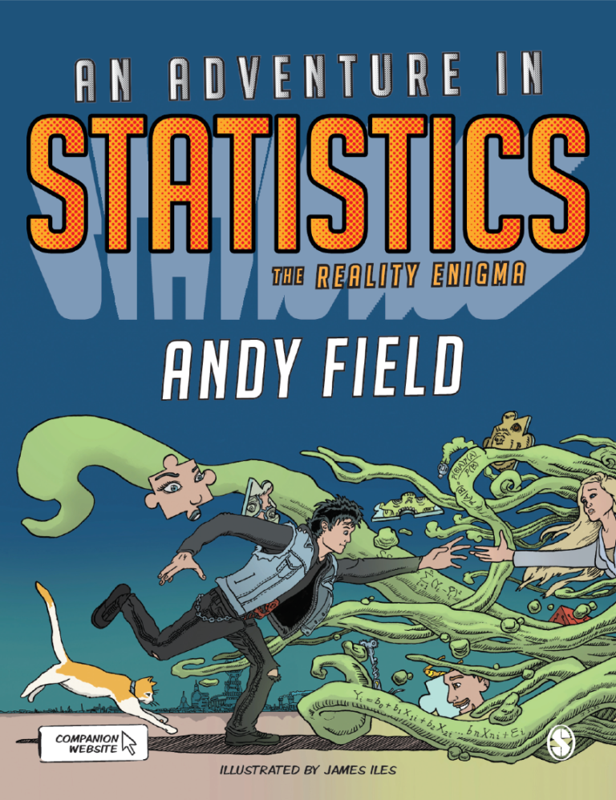
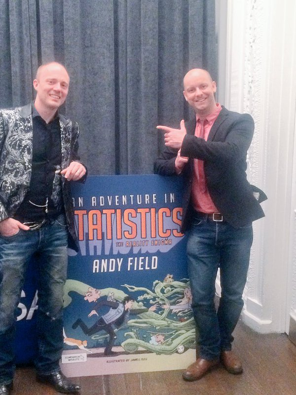

Yesterday was the official launch of my new textbook An Adventure in Statistics: The Reality Enigma. Although a few ‘print to order’ copies are floating about, the ‘proper’ hi-res print copies won’t be available for a few more weeks, but I thought it was a good opportunity to blog something about the book and perhaps textbook writing more generally. I’m going to start by telling you something about the book. Then I will try to give you an idea of the timeline and some rough statistics that probably don’t do justice to the emotional and physical investment that goes into a textbook.

A history of An Adventure in Statistics
Visualization guru (and sculptor) Edward Tufte apparently has a small sign taped to his computer screen that says “If you’re not doing something different, you’re not doing anything at all.” It’s a note that I don’t have taped to my monitor, but I probably should because I like ‘different’, and I strive for ‘different’ not always in a good way.
In 2008 I was in Rotterdam updating my SPSS book (third edition) and like all of my books I had a long list of things from the previous edition that I hated and wanted to change. It would be easy to just change the SPSS screenshots and slap a new cover on the front, but I wanted to do something different. After all “If you’re not doing something different, you’re not doing anything at all.”
I thought it would be interesting to try to embed the academic content of the book within a fictional story. I didn’t have a story though, and I had only 6 months to update the book. It would be impossible. So I copped out: I book-ended each chapter with an anecdote from the only story I had to hand – my life. Some thought it was different, but to me it was a poor imitation of what I could have done.
A couple of years later I was approached to write a stats book for the ‘for dummies’ range. I was tempted. I spoke to my editor at SAGE (who publish my statistics books) because of potential overlap with the SPSS book. This led to a conversation with Ziyad Marar who runs the London office of SAGE. I’ve known Ziyad a long time – he signed my first book – but trust me, he rarely phones me. That’s true of most people because I go to great lengths to tell everyone how uncomfortable telephones make me, but a call from Ziyad is a particularly rare and beautiful thing. The gist of that conversation was that Ziyad convinced me to write new book for SAGE instead. He said, something to the effect of:
‘Why not write that book for us? We will let you do whatever you like express yourself fully.’ “What?” I asked, “You’d give me complete control even after ‘the incident’?” “Yes”. He replied (after what I like to mis-remember as a dramatic pause).
Ziyad was offering me the opportunity to set my imagination free, to go somewhere that perhaps other publishers would not let me go, to try something without needing to justify it with research, or pedagogy. An opportunity to follow my heart and not my head, but what did my heart want to do? I briefly considered whether it was possible to put even more penis jokes into a statistics textbook, but I’d been there, done that, worn the phallus and “If you’re not doing something different, you’re not doing anything at all.”
I thought back to 2008, to the idea of writing a fictional story through which a student learns statistics through a shared adventure with the main character. I thought about collaborating with a graphic novel illustrator to bring the story to life. I didn’t know anything about writing fiction: but, I didn’t know anything about logistic regression and multilevel models before I wrote 60-page chapters about them. Not knowing something should never be an obstacle to writing about it.
I got on board a badass illustrator, James Iles, to create graphic novel strips to bring the story to life. There have been a few pivotal moments during the book’s life but none more than the moment that James replied to my advert on freelancer.com. He fought off about 80 other applicants to get the gig, and although I deluded myself that the choice of illustrator was a complex, make-or-break, decision, my gut instinct always pointed to James. He’d done storyboarding for Doctor Who, and I fucking love Doctor Who. If James was good enough Doctor Who, he was certainly going to be good enough for me. Unknown to me at the time, I hadn’t just found an exceptionally talented artist, but I’d also found someone who would put as much passion and care into the book as I would.
What is An Adventure in Statistics all about?
An adventure in statistics is set in a future in which the invention of the reality prism, a kind of hat that splits reality into the subjective and objective has bought society to collapse by showing everyone the truth. Without blind belief, no-one tried anymore. In the wake of this ‘reality revolution’ society fragmented into people who held onto the pre-technological past (the Clocktorians) and those who embraced the ever-accelerating technology of the new world (the chippers). Society had become a mix of the ultra-modern and the old fashioned.
Into this world I put Zach, a rock musician, and his girlfriend Dr. Alice Nightingale. They are part of the first generation since the revolution to believe that they can change the world. Zach through his music, and Alice through her research. Then Alice suddenly disappears leaving Zach with a broken heart, a song playing on repeat and a scientific report that makes no sense to him. Fearing the worst, he sets out to find her. Strange things happen: people collapse and lose their memories, he gets messages from someone called Milton, and the word JIG:SAW haunts him. Zach feels that something is terribly wrong and that Alice is in danger, but her vanishing triggers an even worse thought: that after 10 years they have drifted apart.
At a simple level An Adventure in Statistics is a story about Zach searching for Alice, and seeking the truth, but it’s also about the unlikely friendship he develops with a sarcastic cat, it’s about him facing his fear of science and numbers, it’s about him learning to believe in himself. It’s a story about love, about not forgetting who you are. It’s about searching for the heartbeats that hide in the gaps between you and the people you love. It’s about having faith in others.
Of course, it’s also about fitting models, robust methods, classical and Bayesian estimation, significance testing and whole bunch of other tedious statistical things, but hopefully you’ll be so engrossed in the story that you won’t notice them. Or they might be a welcome relief from the terrible fiction. Time will tell.
What goes into creating a textbook?
What does writing a textbook involve? That is hard to explain. For an adventure in statistics I really enjoyed the writing (especially the fictional story), on the whole it has been the most rewarding experience of my academic career. However, rest assured that if you decide to write a textbook, you will hit some motivational dark times. Very dark times.
The timeline
I had the initial idea in 2008, I wrote the proposal in January 2011 (final version March 2011). The final contract with SAGE was signed in April 2011. Around this time, I started discussing with SAGE my idea to have graphic novel elements and a story. I started making notes about a potential story and characters in a black book and using Scrivener. I started writing in January 2014. By this point James Iles had just come on board. (SAGE are doing some videos where James and I discuss how we worked, so I won’t say more on that.) At the point that I started writing I had a lot of ideas, most of the characters in place and a decent idea of what would happen at the beginning and end of the story, and some bits in the middle. A lot of the story developed as I wrote. (One thing I learned in writing this book is that even though I thought I’d done a lot of planning, I should have done an awful lot more before writing the first word!) June 2014 my wife and I had our first child. I took unpaid paternity leave and did quite a long stretch of writing (4 months) where I’d spend the day doing dad stuff until about 3-4pm and then start work, writing until 1-3am. I generally work better at night. The first draft was finished around April 2015. We had feedback from a fiction editor (Gillian Stern) on the story which came to me May 2015. I did a re-draft of the entire book based on that, which I finished around August 2015. I then had a bunch more feedback on the story from Robin, my development editor at SAGE, and on the statistics stuff and story from my wife. I did a third and final draft which was submitted October 2015. January 2016 I received the copy editor’s comments for the entire book for approval (or not). March 2016 I received proofs of the entire book, which I spent 2-3 weeks reading/correcting working well into the night most nights. April 2016 I received the corrected proofs to approve. In a sense then, it’s consumed 8 years of my life (as an ambition), but really it’s more like 4 years of work, 2 of them intensive.
The anatomy of An Adventure in Statistics
- I don’t know exactly how many hours I spent on the book, but I spent probably 2 years casually collecting ideas and thoughts, and developing ideas for the structure and so on. I spent another 21 months pretty much doing not a lot else but writing or re-drafting the book. I had my university job to do as well, so it’s impossible to really know how many hours it took to create, but it’s probably somewhere in the region of 4000 hours. That’s just to the point of submitting the manuscript.
- I wrote 297,676 words, ~1.6 million characters, 13,421 paragraphs and 28,768 lines. In terms of word length that’s about 3-4 psychology PhD theses, or if you assume the average research paper is about 5000 words then it’s about 60 research papers. In 2 years. I will get precisely no credit in the REF for this activity. [I’m not saying I should, I’m just making the point that you really are putting your research career on hold and investing a lot of creativity/energy into something that isn’t valued by the system that universities value. I am fortunate to be able to do this but I think this is a really tough balancing act for early-career scientists who want to write books.]
- Given the book had three drafts, and I had to read proofs, I have read at least 1.19 million of my own words. It’ll be a lot more than that because of stuff you write and then delete.
- I used Scrivener to plan the story. My project document in which I gathered ideas (e.g., plot ideas, character outlines, descriptions of locations, venues, objects, concepts, artwork ideas etc.) contains another 87,204 words and quite a few images – in addition to the 297,676 word in the book itself.
- I created 603 diagrams. [Not all of them are the book because this includes old versions of diagrams, and image files that I used in diagrams – for example, an image of a normal curve that I drop into a finished diagram]. I used Omnigraffle incidentally for my diagrams, and graphs and stat-y stuff would have been created using R, most often with ggplot2.
- I created 185 data-related files (data files, R-scripts etc.)
- I wrote ~4000 lines of R-code (to generate data, create graphs, run analyses etc.).
- At some point I will have to produce a bunch of online stuff – powerpoint presentations, handouts, answers to tasks in the book etc.
- Basically, it was a lot of fucking work.
The beginning and the end

Yesterday the book was launched: it is both a beginning and an end. Beginnings can be exciting. It is the beginning of the public life of An Adventure in Statistics. It might be the beginning of it being a well-received book? The beginning of it inspiring young scientists? The beginning of people thinking differently about teaching statistics? That’d be nice but my excitement is laced with fear because beginnings can be scary too: today could be the beginning of seeing the book through a reality prism that shows me the objective truth in the form of scathing reviews, poor sales, sympathetic looks, and five wasted years.
Yesterday was also an end. Primarily an end to my work on the book (well, apart from a bunch of online materials …). I have never liked endings. When I was a child and people would come to stay, I always felt hollow when they left. For over 2 years, the characters in this book – especially Zach, Alice, Milton and Celia – have been the houseguests of my mind. We’ve had a lot of fun times. We’ve worked hard and played hard. We’ve had lots of late night conversations, we’ve shared our deepest feelings, we’ve discussed life, and they’ve helped me to see the world through different eyes. Yesterday they left me to find their own way in the world and I’m going to miss them. I feel a little hollow. I never thought I’d miss writing a statistics textbook.
It’s a scary time. I am proud of and excited about the book, and of what James and I have created. I’m also a little terrified that no-one else will share my enthusiasm after all, it’s different to other statistics textbooks. People don’t always like ‘different’. Tufte’s words are a comfort though because if it’s true that “If you’re not doing something different, you’re not doing anything at all.” then I feel that, with An Adventure in Statistics I have at least done something.
Andy
Some of this blog is adapted from a speech I gave at the launch, which you can watch here
Links
- Download the preface and chapter 1.
- Read the article in the Times Higher Education Supplement about the book.
- The book can be ordered direct from SAGE, or from your local Amazon or other retailer.
Citation
@online{field2016,
author = {Field, Andy},
title = {If You’re Not Doing Something Different, You’re Not Doing
Anything at All.},
date = {2016-04-28},
url = {https://profandyfield.com/posts/2016_04_28_ais/},
langid = {en}
}